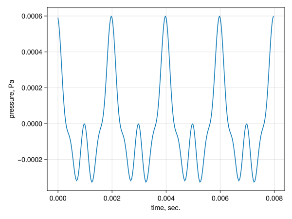
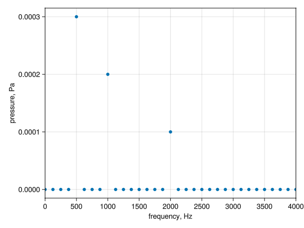
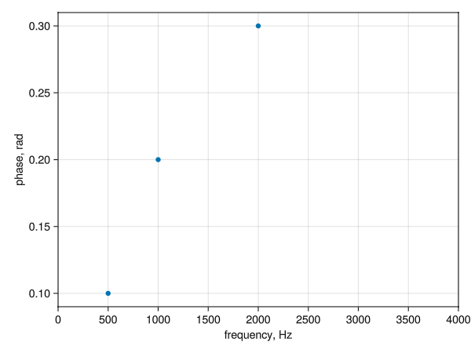
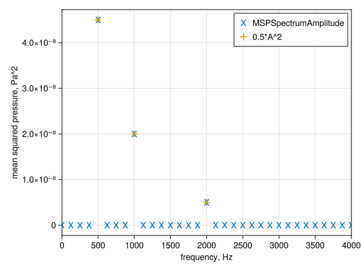
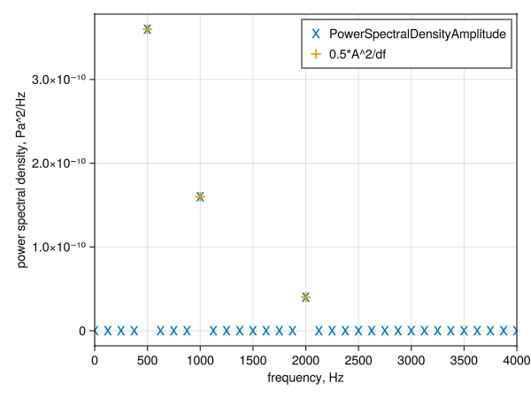
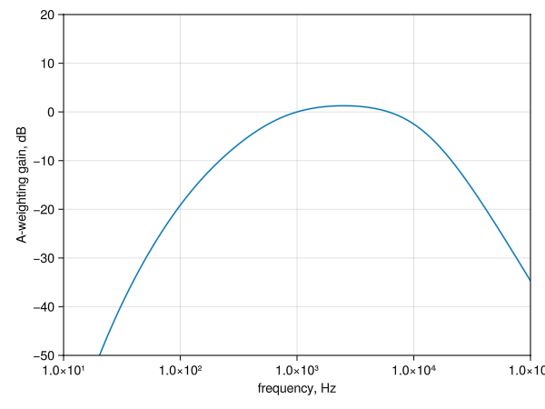

A Practical Narrowband Example
In the Theory section we spent a bunch of time understanding how a discrete Fourier transform works. Now that we know all that, let's actually try out AcousticMetrics.jl and make sure we get the Right Answer™.
The Acoustic Pressure Time History
First, we need to create an acoustic pressure time history, i.e. acoustic pressure as a function of time. In Theory we used a simple function
\[p(t) = A \cos(ωt+φ)\]
But let's use something more interesting, like
\[p(t) = A_1 \cos(ω_1t+φ_1) + A_2 \cos(ω_2t+φ_2) + A_3 \cos(ω_3t+φ_3)\]
To represent this acoustic pressure on a computer, we have to, of course, sample it for a finite number of times. Let's imagine that the frequencies of our pressure time history will be 500 Hz, 1000 Hz, and 2000 Hz. Then we can create an vector to hold our three angular frequencies like this
ω = 2*pi*[500.0, 1000.0, 2000.0]3-element Vector{Float64}:
3141.592653589793
6283.185307179586
12566.370614359172(ω is in units of radians per second of course.) Let's further assume that we'll use a sampling rate of 32,000 Hz. That would imply a time step size Δt of...
sampling_rate = 32_000.0
dt = 1/sampling_rate3.125e-5Finally, we'll make up some values for the amplitudes
A = [0.0003, 0.0002, 0.0001]3-element Vector{Float64}:
0.0003
0.0002
0.0001where A is in units of Pascals, and phase
φ = [0.1, 0.2, 0.3]3-element Vector{Float64}:
0.1
0.2
0.3which is in radians. We'll sample the time history 256 times. That means the total length of our time history will be
num_samples = 256
t_max = num_samples * dt0.008The lowest-frequency part of our time history has a period of
period_ω1 = 2*pi/ω[1]0.002So we can calculate how often our time history will repeat itself by dividing the total length of the history by the period of the lowest-frequency component:
n_repeats = t_max / period_ω14.0Anyway, we can create out pressure time history now, first by creating the time array:
t = (0:(num_samples-1)) .* dt0.0:3.125e-5:0.00796875And then using that to construct the pressure time history:
p = @. A[1] * cos(ω[1]*t + φ[1]) + A[2] * cos(ω[2]*t + φ[2]) + A[3] * cos(ω[3]*t + φ[3])256-element Vector{Float64}:
0.0005900482140642167
0.0005555760647983149
0.00049946592658999
0.00042711465250903376
0.0003452720543262479
0.00026113626479678094
0.00018140819340876465
0.00011144374974616905
5.462687693151463e-5
1.2052299540771906e-5
⋮
0.00011367830905938119
0.00017645034078953297
0.00025000285870790414
0.00032989835794381924
0.00041005297155349705
0.0004834910247943929
0.0005432576398244017
0.0005833556996182581
0.0005995688192952411Let's use Makie to make a plot to admire our beautiful time history:
using GLMakie
fig = Figure()
ax1 = fig[1, 1] = Axis(fig, xlabel="time, sec.", ylabel="pressure, Pa")
lines!(ax1, t, p)
save("narrowband1-pressure_time_history.png", fig)
Indeed, it does repeat the number of times we expected it to (n_repeats).
Now, we need to create a special struct called PressureTimeHistory to get our pressure time history in a form that AcousticMetrics.jl can work with. There are two things we need to create the PressureTimeHistory struct: the pressure values (p in this example), and the time step (dt in this example). (The PressureTimeHistory constructor can also accept a starting time value t0, but uses 0 if you don't provide it). We create the struct with:
using AcousticMetrics
apth = PressureTimeHistory(p, dt)256-element AcousticMetrics.PressureTimeHistory{true, Float64, Vector{Float64}, Float64, Float64}:
0.0005900482140642167
0.0005555760647983149
0.00049946592658999
0.00042711465250903376
0.0003452720543262479
0.00026113626479678094
0.00018140819340876465
0.00011144374974616905
5.462687693151463e-5
1.2052299540771906e-5
⋮
0.00011367830905938119
0.00017645034078953297
0.00025000285870790414
0.00032989835794381924
0.00041005297155349705
0.0004834910247943929
0.0005432576398244017
0.0005833556996182581
0.0005995688192952411Great! What type is apth?
@show typeof(apth)AcousticMetrics.PressureTimeHistory{true, Float64, Vector{Float64}, Float64, Float64}What can we do with our PressureTimeHistory apth? Well, it's an AbstractVector that returns the pressure when indexed:
@show p[8] apth[8]p[8] = 0.00011144374974616905
apth[8] = 0.00011144374974616905(Notice that p[8] is the same as apth[8], as we'd expect.) And so we can do the usual things that we can do with a plain Julia Vector:
@show size(apth) length(apth) apth[4:2:8]size(apth) = (256,)
length(apth) = 256
apth[4:2:8] = [0.00042711465250903376, 0.00026113626479678094, 0.00011144374974616905]There are other acoustic-specific methods that we can use with PressureTimeHistory. For example, we can get the time step size:
@show AcousticMetrics.timestep(apth)AcousticMetrics.timestep(apth) = 3.125e-5And the sample rate
@show AcousticMetrics.samplerate(apth)AcousticMetrics.samplerate(apth) = 32000.0And the starting time value
@show AcousticMetrics.starttime(apth)AcousticMetrics.starttime(apth) = 0.0We can also get a range of the time values for each pressure value using the time method:
t = AcousticMetrics.time(apth)0.0:3.125e-5:0.00796875which can be useful for plotting, etc..
Narrowband Pressure Spectra
Now let's get the spectrum of the pressure amplitude. We can do that by passing our pressure time history to the PressureSpectrumAmplitude constructor, which will create a PressureSpectrumAmplitude struct of course:
pressure_amp = PressureSpectrumAmplitude(apth)129-element AcousticMetrics.PressureSpectrumAmplitude{true, false, Float64, Vector{Float64}, Float64, Float64}:
8.936197593532869e-20
1.129780454000893e-19
1.7460809280212836e-19
2.755775805856133e-19
0.0002999999999999998
1.3707430999953725e-19
1.3471856176606756e-19
3.1962322598513303e-19
0.0002000000000000001
3.0266081323627166e-19
⋮
3.3881317890172014e-21
1.2849682890929293e-20
9.111536454473533e-21
2.681753303096152e-21
2.8948210694992353e-20
2.195098762881622e-21
2.487174614187298e-20
4.9207993627980555e-20
2.668153783851046e-20Now, a PressureSpectrumAmplitude is also an AbstractVector, so we can do the usual vector things:
@show size(pressure_amp) length(pressure_amp)size(pressure_amp) = (129,)
length(pressure_amp) = 129Indexing pressure_amp will give us the pressure spectrum value at a particular frequency. The first entry in pressure_amp will contain the zero-frequency component, which is zero for our example:
pressure_amp[1]8.936197593532869e-20pressure_amp also knows the sample rate of the pressure time history that was used to construct it:
AcousticMetrics.samplerate(pressure_amp)32000.0We can get the bin width of the spectrum, aka the spacing between each frequency:
AcousticMetrics.frequencystep(pressure_amp)125.0There is also a frequency method that will give you a vector of frequencies, one for each entry in pressure_amp:
freq = AcousticMetrics.frequency(pressure_amp)129-element AbstractFFTs.Frequencies{Float64}:
0.0
125.0
250.0
375.0
500.0
625.0
750.0
875.0
1000.0
1125.0
⋮
15000.0
15125.0
15250.0
15375.0
15500.0
15625.0
15750.0
15875.0
16000.0That's very useful for plotting. Let's plot our pressure spectrum:
fig2 = Figure()
ax2_1 = fig2[1, 1] = Axis(fig2, xlabel="frequency, Hz", ylabel="pressure, Pa", xticks=0:500:4000)
scatter!(ax2_1, freq, pressure_amp)
xlims!(ax2_1, 0.0, 4000)
save("narrowband1-pressure_amp_spectrum.png", fig2)
That plot matches what we expect: we have non-zero entries for 500.0 Hz, 1000.0 Hz, and 2000.0 Hz, with values that match what we defined with A above.
We could also get the phase spectrum, which isn't very commonly used in acoustics:
pressure_phase = PressureSpectrumPhase(apth)129-element AcousticMetrics.PressureSpectrumPhase{true, false, Float64, Vector{Float64}, Float64, Float64}:
3.141592653589793
-3.087709720268296
3.058268944211014
-2.9201921032101157
0.0999999999999985
-0.4669119512904858
2.4712258772920412
-2.4271031219062857
0.19999999999999685
0.25821982198282356
⋮
1.5707963267948966
-3.0753868071783046
0.7983990506671069
1.5085757536374724
2.782821983319221
1.1924754173750594
0.5778983667089591
2.070654677616472
3.141592653589793The PressureSpectrumPhase struct pressure_phase is also an AbstractVector, and can do the usual vector things. The samplerate, frequencystep, frequency, etc. methods also work. So we could create a plot to check that the phases match what we set with φ. But that gets a bit tricky, since the phase of the zero components of the spectrum is pretty nonsensical. We're only interested in the phase of the non-zero components of the pressure spectrum, so let's find the indices that correspond to those:
idx_nonzero = findall(pressure_amp .> 1e-10)3-element Vector{Int64}:
5
9
17And then restrict our plotting to those indices:
freq_phase = AcousticMetrics.frequency(pressure_phase)
fig3 = Figure()
ax3_1 = fig3[1, 1] = Axis(fig3, xlabel="frequency, Hz", ylabel="phase, rad", xticks=0:500:4000)
scatter!(ax3_1, freq_phase[idx_nonzero], pressure_phase[idx_nonzero])
xlims!(ax3_1, 0.0, 4000)
save("narrowband1-pressure_phase_spectrum.png", fig3)
That plot matches the φ variable we defined at the beginning, so we're happy with that.
Narrowband Mean-Squared Spectra
The pressure spectrum is useful for testing purposes, but acoustic metrics usually deal with the spectrum of mean-squared pressure, not just plain pressure. We can get the amplitude of the mean-squared pressure spectrum via
msp_amp = MSPSpectrumAmplitude(apth)129-element AcousticMetrics.MSPSpectrumAmplitude{true, false, Float64, Vector{Float64}, Float64, Float64}:
7.985562743066263e-39
6.382019371212319e-39
1.5243993035998335e-38
3.79715014607101e-38
4.4999999999999946e-8
9.394683230924619e-39
9.07454544215888e-39
5.10795032945717e-38
2.0000000000000017e-8
4.5801783934420655e-38
⋮
5.739718509874451e-42
8.255717519872049e-41
4.1510048280600057e-41
3.59590038933356e-42
4.189994512208349e-40
2.4092292894022132e-42
3.0930187807288677e-40
1.2107133184456873e-39
7.119044614278655e-40Again, a MSPSpectrumAmplitude is an AbstractVector, and so can be used like one. And it also works with the the samplerate, frequencystep, frequency, etc. methods.
Now, what do we expect the mean-squared amplitude to look like for our test case? Well, the mean-square of a sinusoid is equal to half it's squared amplitude (see e.g. the Wikipedia page on Root Mean Square). So, for our example, we would expect that to be:
0.5 .* A.^23-element Vector{Float64}:
4.499999999999999e-8
2.0e-8
5.0e-9(That is not true for the zero and Nyquist frequency, as we saw on the Theory page. AcousticMetrics.jl will do the correct thing for those two cases.)
Let's do yet another plot to make sure:
freq4 = AcousticMetrics.frequency(msp_amp)
fig4 = Figure()
ax4_1 = fig4[1, 1] = Axis(fig4, xlabel="frequency, Hz", ylabel="mean squared pressure, Pa^2", xticks=0:500:4000)
scatter!(ax4_1, freq4, msp_amp, marker='x', markersize=20, label="MSPSpectrumAmplitude")
scatter!(ax4_1, ω./(2*pi), 0.5 .* A.^2, marker='+', markersize=25, label="0.5*A^2")
xlims!(ax4_1, 0.0, 4000)
axislegend(ax4_1)
save("narrowband1-msp_amp_spectrum.png", fig4)
Perfect agreement, yay.
What about the phase of the mean-squared pressure? We can calculate that by creating a MSPSpectrumPhase, but that is the same thing as the phase of the pressure spectrum. So in AcousticMetrics.jl the MSPSpectrumPhase is just an alias for PressureSpectrumPhase.
Narrowband Power Spectral Density
Another commonly-used acoustic metric is the power spectral density (PSD), which is the mean-squared pressure divided by the narrowband bandwidth, i.e. the spacing between frequency values, i.e. the thing returned by AcousticMetrics.frequencystep, i.e. the inverse of the period associated with the pressure time history:
df = 1/t_max
@show df AcousticMetrics.frequencystep(msp_amp)df = 125.0
AcousticMetrics.frequencystep(msp_amp) = 125.0In our example, we would expect the PSD to look like this, then:
0.5 .* A.^2 ./ df3-element Vector{Float64}:
3.5999999999999995e-10
1.6000000000000002e-10
4.0000000000000004e-11To calculate the PSD amplitude using AcousticMetrics.jl, we use the PowerSpectralDensityAmplitude constructor:
psd_amp = PowerSpectralDensityAmplitude(apth)129-element AcousticMetrics.PowerSpectralDensityAmplitude{true, Float64, Vector{Float64}, Float64, Float64}:
6.388450194453011e-41
5.105615496969855e-41
1.2195194428798669e-40
3.037720116856808e-40
3.599999999999996e-10
7.515746584739695e-41
7.259636353727104e-41
4.086360263565736e-40
1.6000000000000015e-10
3.6641427147536525e-40
⋮
4.591774807899561e-44
6.604574015897639e-43
3.3208038624480047e-43
2.876720311466848e-44
3.351995609766679e-42
1.9273834315217706e-44
2.474415024583094e-42
9.685706547565499e-42
5.6952356914229235e-42which, yet again, is an AbstractVector, and works with all the acoustic methods we've discussed so far.
Now, let's plot it and compare to what we think we should get.
freq5 = AcousticMetrics.frequency(psd_amp)
fig5 = Figure()
ax5_1 = fig5[1, 1] = Axis(fig5, xlabel="frequency, Hz", ylabel="power spectral density, Pa^2/Hz", xticks=0:500:4000)
scatter!(ax5_1, freq5, psd_amp, marker='x', markersize=20, label="PowerSpectralDensityAmplitude")
scatter!(ax5_1, ω./(2*pi), 0.5 .* A.^2 ./ df, marker='+', markersize=25, label="0.5*A^2/df")
xlims!(ax5_1, 0.0, 4000)
axislegend(ax5_1)
save("narrowband1-psd_amp_spectrum.png", fig5)
What about the phase of the PSD? Like the mean-squared pressure case, AcousticMetrics.jl provides a PowerSpectralDensityPhase, but it's just an alias for PressureSpectrumPhase.
Tonal vs Narrowband Spectra
All of the narrowband metrics we've talked about so far keep track of a boolean type parameter called IsTonal, which indicates whether the spectrum is considered a "tonal" or a "regular" narrowband spectrum. The IsTonal parameter is decided by you, the user, when you create any of the narrowband spectra, via an optional istonal argument. By default istonal is false. If we wanted to use true instead, we could do something like:
it = true
msp_amp_tonal = MSPSpectrumAmplitude(apth, it)129-element AcousticMetrics.MSPSpectrumAmplitude{true, true, Float64, Vector{Float64}, Float64, Float64}:
7.985562743066263e-39
6.382019371212319e-39
1.5243993035998335e-38
3.79715014607101e-38
4.4999999999999946e-8
9.394683230924619e-39
9.07454544215888e-39
5.10795032945717e-38
2.0000000000000017e-8
4.5801783934420655e-38
⋮
5.739718509874451e-42
8.255717519872049e-41
4.1510048280600057e-41
3.59590038933356e-42
4.189994512208349e-40
2.4092292894022132e-42
3.0930187807288677e-40
1.2107133184456873e-39
7.119044614278655e-40There is an istonal method that we can use to check that it worked:
@show AcousticMetrics.istonal(msp_amp_tonal) AcousticMetrics.istonal(msp_amp)AcousticMetrics.istonal(msp_amp_tonal) = true
AcousticMetrics.istonal(msp_amp) = falseWhat's the difference? We won't see any difference in the amplitudes, frequencies, phase, or anything else associated with the narrowband spectra between msp_amp and msp_amp_tonal. The importance tonal vs non-tonal comes into play when we start working with proportional band spectra, where we will combine the acoustic energy of a range of narrowband frequencies into a proportional band. In AcousticMetrics.jl, if a narrowband spectrum is tonal, the acoustic energy (read: mean-squared pressure) is assumed to be concentrated at the center of each narrowband frequency. If the spectrum is non-tonal, the energy is assumed to be evenly distributed throughout each narrow frequency band.
One detail to note: AcousticMetrics.jl doesn't allow you to create a PSD amplitude from a tonal spectrum, since the PSD is not well-defined for tonal signals. Since the PSD is defined as the mean-squared pressure divided by the frequency bin width df, the power spectral density of a tone will increase without limit as df is decreased, since a tone by definition is non-zero at discrete frequencies.
Converting From One Narrowband Metric to Another
We can convert from one narrowband spectrum to another this way:
psd_amp2 = PowerSpectralDensityAmplitude(msp_amp)
@show maximum(abs.(psd_amp2 .- psd_amp))maximum(abs.(psd_amp2 .- psd_amp)) = 0.0Going from a mean-squared pressure amplitude to a power spectral density amplitude might not be suprising, but we could also convert the phase to a PSD:
psd_amp3 = PowerSpectralDensityAmplitude(pressure_phase)
@show maximum(abs.(psd_amp3 .- psd_amp))maximum(abs.(psd_amp3 .- psd_amp)) = 0.0How is that possible? The answer is that all of the narrowband spectra types that we've talked about are actually just small wrappers around the raw Fourier transform of the pressure time history. We can grab the underlying Vector that holds the Fourier transform (in FFTW's "half complex" format) using the halfcomplex method:
@show AcousticMetrics.halfcomplex(msp_amp) AcousticMetrics.halfcomplex(psd_amp)AcousticMetrics.halfcomplex(msp_amp) = [-2.2876665839444144e-17, -1.4440201793977404e-17, -2.2272295083679517e-17, -3.4412923684124153e-17, 0.03820815994667617, 1.56674851993601e-17, -1.3512273473378337e-17, -3.0905891218523766e-17, 0.025089704392735813, 3.745618247971986e-17, 5.462079569210755e-18, 4.7158729945756805e-18, 5.6243473914978425e-18, -3.0382283333801743e-18, -1.870514909840083e-18, -9.059802699193705e-18, 0.012228307060807783, 1.4984912002282025e-17, 3.4896879914772836e-18, 9.61992917237569e-18, 1.5660974754292466e-17, 3.376746123579114e-18, 2.924700970054017e-18, 2.4514173708884894e-18, 4.563537512670177e-20, 3.860148234166379e-18, 1.4901979936690517e-18, 6.676017474722636e-19, -8.033251663784916e-18, -3.1880098850680976e-18, 7.161843208472648e-18, -8.060711637520178e-18, -1.4055554713479513e-17, -6.420434208886679e-18, 4.27802744978436e-18, 2.615405194612927e-19, 1.3919892544213106e-18, 1.0569303633141781e-18, 3.5840438511626444e-18, -6.537533174122367e-18, -1.0060312994698468e-17, -8.054232132965218e-18, 9.077949087374772e-18, -5.39046877660393e-18, 1.2593570438568493e-18, -2.6074373397719146e-18, 7.422964403861828e-19, -9.461598065776218e-19, 4.7704895589362195e-18, -9.139233723943795e-19, 2.5651502685364186e-18, 2.4011199396397737e-18, 9.934015642757954e-19, 4.6053563105863375e-18, -7.148406878786149e-18, 9.074835020479874e-18, 8.890457814381136e-18, 5.566183671438559e-18, -3.569485678094583e-18, 8.518477545914668e-20, 1.4094628242311558e-18, 8.428941478666328e-19, -2.790524686281176e-18, 7.869770262760875e-18, 5.421010862427522e-19, 5.9446033117819255e-18, -3.82151432342405e-18, 2.722635327928602e-18, -1.4094628242311558e-18, 8.055784426924645e-19, -3.8149552541400275e-19, 4.946474786260113e-19, -1.951563910473908e-18, 1.4165827060104067e-19, 8.3855488964850855e-19, -1.1999062615164909e-18, -3.858558338349111e-18, -2.6201125600883353e-18, 2.1573891760050767e-18, -2.0230115200161072e-18, -1.0842021724855044e-17, -1.3243306251171376e-18, -2.235789189614539e-19, -1.5465662572045717e-18, -2.5220674738968456e-19, -2.483082431088831e-19, -2.108174765930873e-18, 1.2740454416691684e-19, -2.0827513371391815e-18, 5.298978712999063e-19, -2.9683650089178665e-18, 8.818654542155947e-19, -5.246275164329071e-19, 2.221795936783943e-18, -4.7527790758480085e-18, 3.1502170775659493e-18, -2.5591396332914564e-19, 3.036845311036865e-18, -7.719062081262703e-19, 2.0730273204891587e-19, 3.696442973842897e-18, -4.606561256409639e-19, -7.355109609570575e-19, 2.8713073062516946e-18, 1.0362705480734141e-17, 7.998165478565182e-19, -1.5196369175813407e-18, 1.801109424160799e-18, 6.791097090084385e-19, 3.875113972722351e-19, 2.7269415581958593e-18, -2.6025503387153285e-18, 6.071532165918825e-18, -2.9054193538227524e-18, 1.3230042530505053e-18, 8.072564193578754e-20, 7.102563345290866e-19, -1.904457067084322e-18, 3.2663072630051917e-18, -2.3616805964256545e-18, 0.0, -1.641156060197452e-18, 8.138911477214357e-19, 2.1344330835307657e-20, -3.469446951953614e-18, 1.0378023340101396e-19, 2.666609489651595e-18, -3.018937807747413e-18, -6.830473686658678e-18, 5.527989556048521e-18, 1.7390795756354607e-18, 2.6110398026526286e-19, 1.3010426069826053e-18, 3.4260018023765697e-19, 8.353337427156805e-19, -1.0881315632243531e-19, 4.336808689942018e-19, 1.191387789423802e-18, 1.4333553036511484e-18, 1.8392879010919437e-18, 7.757851888093473e-19, -3.5410118721446086e-19, 2.7804810655787813e-18, 3.064804641561942e-18, 2.168404344971009e-19, -1.6403329913191733e-18, -5.079387793272517e-19, 1.7345856742584734e-18, 2.662230733702361e-18, -1.6906954410783177e-18, 2.825815099571609e-18, 6.911040444310635e-18, -1.74242661472536e-18, -7.249356195837851e-18, -4.0341804847713753e-19, 1.2039612534588546e-18, -1.2434473025609361e-18, -2.5112348492594316e-18, -1.8148552290364264e-18, -3.599604951056339e-19, 3.361574325527939e-19, -2.240876940884781e-18, -3.0348127301949014e-19, -3.4737668903912985e-18, -3.9607231253694855e-18, 1.8308942513904846e-18, -6.531386088112263e-19, -6.825743756429243e-18, -6.28299184039623e-19, 2.320588492317481e-18, 1.2126992983610428e-18, -2.5691113542286746e-18, -5.791729952808839e-20, 1.6699798488768603e-18, -2.8204555416010292e-18, -7.869384657870229e-18, -8.673617379884035e-19, 6.961232748394197e-18, 3.379664214901976e-18, -8.836615855700247e-19, 1.0313605058350306e-18, 1.845249273608453e-18, 8.75077499270652e-19, 2.0836781238944615e-18, 4.336808689942018e-19, 2.637543995381093e-18, 1.3562335029380897e-18, 2.4958880361512316e-18, 8.673617379884035e-19, -8.782966472763208e-19, 8.150628740824611e-19, 9.252624952327014e-18, -6.505213034913027e-19, -3.692852084769332e-18, 6.53602007669988e-20, 8.891373309626806e-19, -8.673617379884035e-19, 1.9111422632391532e-18, 1.856918288779723e-18, 6.955265469242672e-18, 1.3010426069826053e-18, -9.698554277486664e-18, -2.640973689143754e-18, 4.3231067383398715e-18, -4.857343569199338e-18, -3.973611024182005e-18, -1.4439211501654122e-18, -1.870520351949028e-18, -8.673617379884035e-19, -2.7256642343576365e-18, -3.084243239774697e-18, -3.3002156735982197e-18, -5.296100071071154e-18, 2.543838361744243e-18, -1.519910652263896e-18, -1.092819697114342e-17, -3.4472248325019345e-18, 8.61327969437923e-18, 3.460478895117765e-19, 1.8786050843542332e-18, 5.0824912826881254e-20, 3.474732405613398e-19, -2.186715176394643e-18, -1.2138358685993183e-17, -2.482768215909518e-18, 1.8885542815870505e-17, 2.980107652139359e-18, -3.441577767033589e-18, 5.1533455151035404e-18, 7.50803254360141e-18, 5.597668409641475e-18, 3.460184318447916e-18, 6.280669461667373e-18, 7.380432971275999e-18, 4.707771660517639e-18, 7.561774370791374e-18, 5.447144038552028e-18, -9.104568932282087e-19, 9.310314504854552e-18, 1.503361233405048e-17, 0.003782658645265089, -8.443096724640134e-19, -8.786938919451973e-19, 1.5115563435430656e-18, 4.211219797150317e-18, -1.4637465552186456e-18, 1.2470619662325845e-17, 9.892787777417602e-18, 0.00508593486835349, -2.680669789334936e-17, 1.0713224100582342e-17, -7.897777385997285e-18, 0.0038336031992381417, -7.746021131858306e-18, 1.8601170686541933e-18, -7.788343245498472e-19]
AcousticMetrics.halfcomplex(psd_amp) = [-2.2876665839444144e-17, -1.4440201793977404e-17, -2.2272295083679517e-17, -3.4412923684124153e-17, 0.03820815994667617, 1.56674851993601e-17, -1.3512273473378337e-17, -3.0905891218523766e-17, 0.025089704392735813, 3.745618247971986e-17, 5.462079569210755e-18, 4.7158729945756805e-18, 5.6243473914978425e-18, -3.0382283333801743e-18, -1.870514909840083e-18, -9.059802699193705e-18, 0.012228307060807783, 1.4984912002282025e-17, 3.4896879914772836e-18, 9.61992917237569e-18, 1.5660974754292466e-17, 3.376746123579114e-18, 2.924700970054017e-18, 2.4514173708884894e-18, 4.563537512670177e-20, 3.860148234166379e-18, 1.4901979936690517e-18, 6.676017474722636e-19, -8.033251663784916e-18, -3.1880098850680976e-18, 7.161843208472648e-18, -8.060711637520178e-18, -1.4055554713479513e-17, -6.420434208886679e-18, 4.27802744978436e-18, 2.615405194612927e-19, 1.3919892544213106e-18, 1.0569303633141781e-18, 3.5840438511626444e-18, -6.537533174122367e-18, -1.0060312994698468e-17, -8.054232132965218e-18, 9.077949087374772e-18, -5.39046877660393e-18, 1.2593570438568493e-18, -2.6074373397719146e-18, 7.422964403861828e-19, -9.461598065776218e-19, 4.7704895589362195e-18, -9.139233723943795e-19, 2.5651502685364186e-18, 2.4011199396397737e-18, 9.934015642757954e-19, 4.6053563105863375e-18, -7.148406878786149e-18, 9.074835020479874e-18, 8.890457814381136e-18, 5.566183671438559e-18, -3.569485678094583e-18, 8.518477545914668e-20, 1.4094628242311558e-18, 8.428941478666328e-19, -2.790524686281176e-18, 7.869770262760875e-18, 5.421010862427522e-19, 5.9446033117819255e-18, -3.82151432342405e-18, 2.722635327928602e-18, -1.4094628242311558e-18, 8.055784426924645e-19, -3.8149552541400275e-19, 4.946474786260113e-19, -1.951563910473908e-18, 1.4165827060104067e-19, 8.3855488964850855e-19, -1.1999062615164909e-18, -3.858558338349111e-18, -2.6201125600883353e-18, 2.1573891760050767e-18, -2.0230115200161072e-18, -1.0842021724855044e-17, -1.3243306251171376e-18, -2.235789189614539e-19, -1.5465662572045717e-18, -2.5220674738968456e-19, -2.483082431088831e-19, -2.108174765930873e-18, 1.2740454416691684e-19, -2.0827513371391815e-18, 5.298978712999063e-19, -2.9683650089178665e-18, 8.818654542155947e-19, -5.246275164329071e-19, 2.221795936783943e-18, -4.7527790758480085e-18, 3.1502170775659493e-18, -2.5591396332914564e-19, 3.036845311036865e-18, -7.719062081262703e-19, 2.0730273204891587e-19, 3.696442973842897e-18, -4.606561256409639e-19, -7.355109609570575e-19, 2.8713073062516946e-18, 1.0362705480734141e-17, 7.998165478565182e-19, -1.5196369175813407e-18, 1.801109424160799e-18, 6.791097090084385e-19, 3.875113972722351e-19, 2.7269415581958593e-18, -2.6025503387153285e-18, 6.071532165918825e-18, -2.9054193538227524e-18, 1.3230042530505053e-18, 8.072564193578754e-20, 7.102563345290866e-19, -1.904457067084322e-18, 3.2663072630051917e-18, -2.3616805964256545e-18, 0.0, -1.641156060197452e-18, 8.138911477214357e-19, 2.1344330835307657e-20, -3.469446951953614e-18, 1.0378023340101396e-19, 2.666609489651595e-18, -3.018937807747413e-18, -6.830473686658678e-18, 5.527989556048521e-18, 1.7390795756354607e-18, 2.6110398026526286e-19, 1.3010426069826053e-18, 3.4260018023765697e-19, 8.353337427156805e-19, -1.0881315632243531e-19, 4.336808689942018e-19, 1.191387789423802e-18, 1.4333553036511484e-18, 1.8392879010919437e-18, 7.757851888093473e-19, -3.5410118721446086e-19, 2.7804810655787813e-18, 3.064804641561942e-18, 2.168404344971009e-19, -1.6403329913191733e-18, -5.079387793272517e-19, 1.7345856742584734e-18, 2.662230733702361e-18, -1.6906954410783177e-18, 2.825815099571609e-18, 6.911040444310635e-18, -1.74242661472536e-18, -7.249356195837851e-18, -4.0341804847713753e-19, 1.2039612534588546e-18, -1.2434473025609361e-18, -2.5112348492594316e-18, -1.8148552290364264e-18, -3.599604951056339e-19, 3.361574325527939e-19, -2.240876940884781e-18, -3.0348127301949014e-19, -3.4737668903912985e-18, -3.9607231253694855e-18, 1.8308942513904846e-18, -6.531386088112263e-19, -6.825743756429243e-18, -6.28299184039623e-19, 2.320588492317481e-18, 1.2126992983610428e-18, -2.5691113542286746e-18, -5.791729952808839e-20, 1.6699798488768603e-18, -2.8204555416010292e-18, -7.869384657870229e-18, -8.673617379884035e-19, 6.961232748394197e-18, 3.379664214901976e-18, -8.836615855700247e-19, 1.0313605058350306e-18, 1.845249273608453e-18, 8.75077499270652e-19, 2.0836781238944615e-18, 4.336808689942018e-19, 2.637543995381093e-18, 1.3562335029380897e-18, 2.4958880361512316e-18, 8.673617379884035e-19, -8.782966472763208e-19, 8.150628740824611e-19, 9.252624952327014e-18, -6.505213034913027e-19, -3.692852084769332e-18, 6.53602007669988e-20, 8.891373309626806e-19, -8.673617379884035e-19, 1.9111422632391532e-18, 1.856918288779723e-18, 6.955265469242672e-18, 1.3010426069826053e-18, -9.698554277486664e-18, -2.640973689143754e-18, 4.3231067383398715e-18, -4.857343569199338e-18, -3.973611024182005e-18, -1.4439211501654122e-18, -1.870520351949028e-18, -8.673617379884035e-19, -2.7256642343576365e-18, -3.084243239774697e-18, -3.3002156735982197e-18, -5.296100071071154e-18, 2.543838361744243e-18, -1.519910652263896e-18, -1.092819697114342e-17, -3.4472248325019345e-18, 8.61327969437923e-18, 3.460478895117765e-19, 1.8786050843542332e-18, 5.0824912826881254e-20, 3.474732405613398e-19, -2.186715176394643e-18, -1.2138358685993183e-17, -2.482768215909518e-18, 1.8885542815870505e-17, 2.980107652139359e-18, -3.441577767033589e-18, 5.1533455151035404e-18, 7.50803254360141e-18, 5.597668409641475e-18, 3.460184318447916e-18, 6.280669461667373e-18, 7.380432971275999e-18, 4.707771660517639e-18, 7.561774370791374e-18, 5.447144038552028e-18, -9.104568932282087e-19, 9.310314504854552e-18, 1.503361233405048e-17, 0.003782658645265089, -8.443096724640134e-19, -8.786938919451973e-19, 1.5115563435430656e-18, 4.211219797150317e-18, -1.4637465552186456e-18, 1.2470619662325845e-17, 9.892787777417602e-18, 0.00508593486835349, -2.680669789334936e-17, 1.0713224100582342e-17, -7.897777385997285e-18, 0.0038336031992381417, -7.746021131858306e-18, 1.8601170686541933e-18, -7.788343245498472e-19]We can use the strong equality operator === to prove to ourselves that msp_amp and psd_amp2 actually just hold a reference to the same Fourier transform Vector:
@show AcousticMetrics.halfcomplex(msp_amp) === AcousticMetrics.halfcomplex(psd_amp2)AcousticMetrics.halfcomplex(msp_amp) === AcousticMetrics.halfcomplex(psd_amp2) = trueA-Weighting
A-weighting involves increasing or decreasing an acoustic spectrum at specific frequencies to mimic how the sound is perceived by a human. We can A-weight any narrowband spectrum defined in AcousticMetrics.jl using the a_weight and a_weight! methods. As the names imply, a_weight will return a new spectrum with the appropriate weighting applied, while the a_weight! will weight the input spectrum in-place:
msp_A = a_weight(msp_amp)
# Make a copy of `msp_amp` before we weight it:
msp_A2 = deepcopy(msp_amp)
a_weight!(msp_A2)
@show maximum(abs.(msp_A .- msp_A2))maximum(abs.(msp_A .- msp_A2)) = 0.0AcousticMetrics.jl also exposes a function W_A that takes a frequency and returns the appropriate weighting factor for the frequency. We can use that to plot the A-weighting curve, but first we'll calculate the gain in decibels associated with the A-weighting:
freqs_gain_A = 10.0.^(range(1, 5; length=100))
gain_A = 10 .* log10.(W_A.(freqs_gain_A))
extrema(gain_A)(-70.43036667219101, 1.2688627521607254)And here's the plot:
fig6 = Figure()
ax6_1 = fig6[1, 1] = Axis(fig6, xlabel="frequency, Hz", ylabel="A-weighting gain, dB", xscale=log10, xticks=[10^i for i in 1:5])
lines!(ax6_1, freqs_gain_A, gain_A)
xlims!(ax6_1, 10.0, 100e3)
ylims!(ax6_1, -50, 20)
save("narrowband1-a_weighting_gain.png", fig6)
That lines up quite well with the corresponding plot in the Wikipedia page on A-weighting.